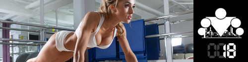

The topic of drinking during training is one of those where there are a lot of different opinions. That's because the answer depends on a large number of parameters, for example the intensity of the workout and its duration, your level and overall mindset, the temperature outside, and so on. It's worth noting that the more prepared you are for the load (adapted to it), the easier it comes, the less strength and energy you spend, and therefore the less you'll want to drink.
How much water to drink
We'll answer right away — drink as much as you want and when you want, keeping a reasonable measure. If you want to drink — drink. Thirst is generally the best indicator that your body needs more water.
The most common recommendation: drink about 1.5–2.5 liters of water a day. But this recommendation is extremely general, so you shouldn't take it too seriously. All people are different, lead different lifestyles, live in different conditions, have different habits, so their water consumption will be different too. In general you can give the following recommendation: if you want to drink — drink.
Where did the 8 glasses of water recommendation even come from?
The first mention of exactly that volume of water a day as a recommended norm appeared in August 1945 in the US Food and Nutrition Board. Two very important points were noted. First, that the stated amount was not obtained as a result of any study. Second, that people get most of that amount of water from food (at a rate of 1 milliliter per 1 kilocalorie).[3]
By the way, tea, coffee, and juices should also be counted! Despite the widespread opinion on the internet that they have a diuretic effect, studies prove the opposite [4].
Why it's important to drink water during training
During workouts we sweat a lot — that's how our body reacts to the rise in temperature from active muscle work. Depending on workout intensity and external conditions the body can lose from 0.5 to 1.5–2 liters of water.
By the way, a lot of people confuse this natural process with fat loss. But that's only an illusion, the same as the hope of losing weight by exhausting yourself sitting (and sweating) in a sauna for a long time. Unfortunately, no fat loss happens. Only temporary dehydration of the body sets in. The number of fat cells doesn't decrease from active sweating (dehydration), no matter how much you suffer.
On the contrary, losing a large amount of water leads to higher blood viscosity in the body, which means it becomes harder for the heart to pump it. Besides the heart (higher blood pressure), other organs take a hit too, for example the kidneys (lower quality of kidney filtration and cleaning the body of breakdown products).
The amount of water drunk during a workout should roughly match the amount of fluid the body evaporated. But since calculating that is practically impossible, I recommend you go by how you feel — the feeling of thirst.
Keep in mind that when breathing through the mouth, thirst will feel stronger than the body's real water needs, and intense strength training dulls the feeling of thirst.
On training days, especially in the hot season, you need to drink even more, because under intense physical load the body loses not only water but also electrolytes. These are substances in the blood in the form of salts, acids, and alkalis that, among other things, carry water molecules through the blood vessels to all tissues of the body. A drop in their amount can lead to serious disruptions in the work of many organs.
How to drink water during training
We've dealt with the question of whether you need to drink during training; now let's deal with how you should drink. The general advice that can be given on this is: be moderate and don't drink to the point that water in the stomach gets in the way of the workout, creating a feeling of heaviness. Besides that, an excessive amount of water can really increase the load on the heart too. So drink in small portions, quenching thirst and refreshing yourself.
A simple fluid-balance test:
A quick and accessible test for the body's water state is analyzing urine color. The normal color is light straw. The darker the urine, the stronger the load on the kidneys, which among other things also means dehydration.
To drink or not to drink water during meals?
We've dealt with training, so let's move to another popular question about water. The thing is that a misconception is quite widely spread on the internet that it's better not to drink water during meals, because extra fluid will dilute gastric juice and lead to a whole range of problems. In short — no. But for that you need to understand the mechanisms of how our body works, and most authors of articles on the internet couldn't even handle a school biology course.
The stomach's main job is grinding food into chyme by contracting and relaxing the muscle fibers that cover it. Acid and gastric enzymes are also used to make this process easier. And what happens if we wash food down with water? Because on the internet you can very often find information that water entering the stomach will lower the concentration of gastric juice.
No, it won't. First, because not enough of it arrives (to raise pH even by one point you'd need to drink several liters of water at once). Second, it doesn't stay in the stomach for long, because the structure of the stomach lets it separate the contents into chyme and fluid. The first is held for the time needed for digestion (in the proximal part of the stomach), and the second is passed on, into the distal part. Third, a healthy stomach maintains the acidity level on its own, producing extra acid if its level drops because of incoming food [5].
What's more, extra fluid will only help digestion.
And what about the temperature of drinks?
Someday we'll definitely clean the internet of obscurantism, but until then there will still be a huge number of sites claiming that cold drinks can interfere with GI tract work because they will push food from the stomach into the small intestine. Meaning you must never wash food down with cold water!
In reality the studies [1,2] done on this collected completely opposite data. If the temperature of food or fluid differs from body temperature (in either direction), that will slow the process of emptying the stomach!
Sources
1. Troncon LE1, Iazigi N., Effect of test meal temperature on the gastric emptying of liquids, Braz J Med Biol Res. 1988;21(1):57-60., https://www.ncbi.nlm.nih.gov/pubmed/3179579
2. W M Sun, L A Houghton, N W Read, D G Grundy, and A G Johnson, Effect of meal temperature on gastric emptying of liquids in man, Gut. 1988 Mar; 29(3): 302–305., https://www.ncbi.nlm.nih.gov/pmc/articles/PMC1433604/
3. Food and Nutrition Board, National Academy of Sciences. Recommended Dietary Allowances, revised 1945. National Research Council, Reprint and Circular Series, No. 122, 1945 (Aug), p. 3–18.
4. Ronald J Maughan, Phillip Watson, Philip AA Cordery, Neil P Walsh, Samuel J Oliver, Alberto Dolci, Nidia Rodriguez-Sanchez, Stuart DR Galloway (2015) A randomized trial to assess the potential of different beverages to affect hydration status: development of a beverage hydration index, The American Journal of Clinical Nutrition, Volume 103, Issue 3, March 2016, Pages 717–723, https://doi.org/10.3945/ajcn.115.114769
5. Grandjean AC, Reimers KJ, Bannick KE, Haven MC. (2000) The effect of caffeinated, non-caffeinated, caloric and non-caloric beverages on hydration. J Am Coll Nutr 19:591–600.
6. Disintegration of Solid Foods in Human Stomach. J Food Sci. 2008 Jun;73(5):R67-80. doi: 10.1111